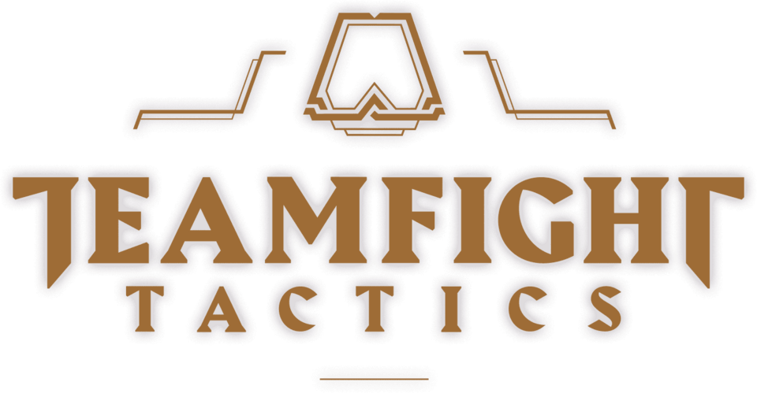

<!DOCTYPE html>
<html lang="en"></html>
<head>
    <meta charset="UTF-8">
    <meta name="viewport" content="width=device-width, initial-scale=1.0">
    <!-- js -->
    <script defer src="./js/main.js"></script>
    <title>Guia de TFT</title>
    <link rel="stylesheet" href="style.css">
</head>
<body>
    <header id="title">
        <h1> Guia para Principiantes en Teamfight Tactics</h1>
            
            <p id="intro"> Teamfight Tactics (TFT) es un juego de estrategia por turnos, perteneciente al género Auto Battler, desarrollado por Riot Games. Se juega en una partida de 8 jugadores, donde cada uno construye un equipo de pequeños campeones de League of Legends que luchan automáticamente entre sí. <br> El objetivo es ser el último jugador en pie. Esto se logra mediante una cuidadosa selección de campeones, la creación de sinergias entre ellos (a través de orígenes y clases), y la adaptación a las estrategias de los oponentes.</p>
    </header>
    
    <div>
        <button id="guia">Guia</button>
        <button id="buscador">Buscador</button>
        <button id="team">Equipo</button>
    </div>
    <div id="volver-placeholder"></div>
</body>
</html>